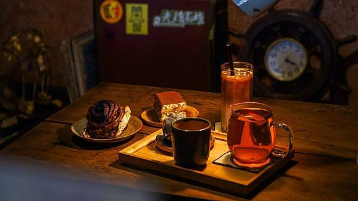

首頁
猻物咖啡Akau Coffee
龜時間 goöod time
心得感想

海珈琲 海とコーヒー
海珈琲保存許多以前遺留的事物，製作的餐點亦維持最單純的樣貌，
以認真的態度接待每一位來訪的人。
Jude說道：「取名為海珈琲的原因為自己喜歡海，海讓我感受到平靜。」，
期望來訪的人能有一個安靜休憩的地方，彷彿在海裡悠遊的感覺，
不受外在紛擾，擁有片刻屬於自己舒適的空間。
同時也是向自身喜愛的吉印咖啡致敬，希望能創造真正讓人放鬆自在的氛圍，
讓大家享受寧靜自適的時光。